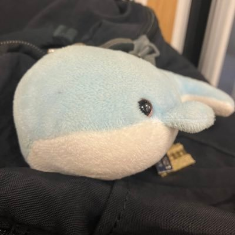

Tadayoshi Kamegai
DPhil student in Computer Science
St Anne's College · University of Oxford

Welcome! I am Tadayoshi Kamegai, a 1st year DPhil student at St Anne's College, University of Oxford studying computer science under the supervision of Sam Staton and Maximilian Doré. My general interests lie in Type Theory and surrounding fields.
I'm currently wandering around various concepts in Type Theory. If you read/wrote a fun paper recently please feel free to reach out to me at [firstname].[lastname]@st-annes.ox.ac.uk.
Research and background
In summer of 2025 I worked as an intern at ELTE under Ambrus Kaposi on works related to GATs. I have also worked as a research assistant with Nobuko Yoshida in the Mobility Reading Group at Oxford, mechanising the metatheory of session types in Coq.
My Master's thesis with Maximilian Doré was titled “Use It or Lose It. Resource-Indexed Types and Contractible Spaces in Substructural Dependent Type Theory.” You can usually see what kind of work I've been reading by visiting my reading list and notes page.
Outside studies
Outside studies, I enjoy travelling and taking photos. I grew up in Osaka, Japan before moving to the UK in 2022 for university. Osaka is my current off-term home.
I originally created this web template in September 2025, to make a clean portfolio for myself. This site itself was launched July 2022. For details on how this site functions, you can see the first blog post.